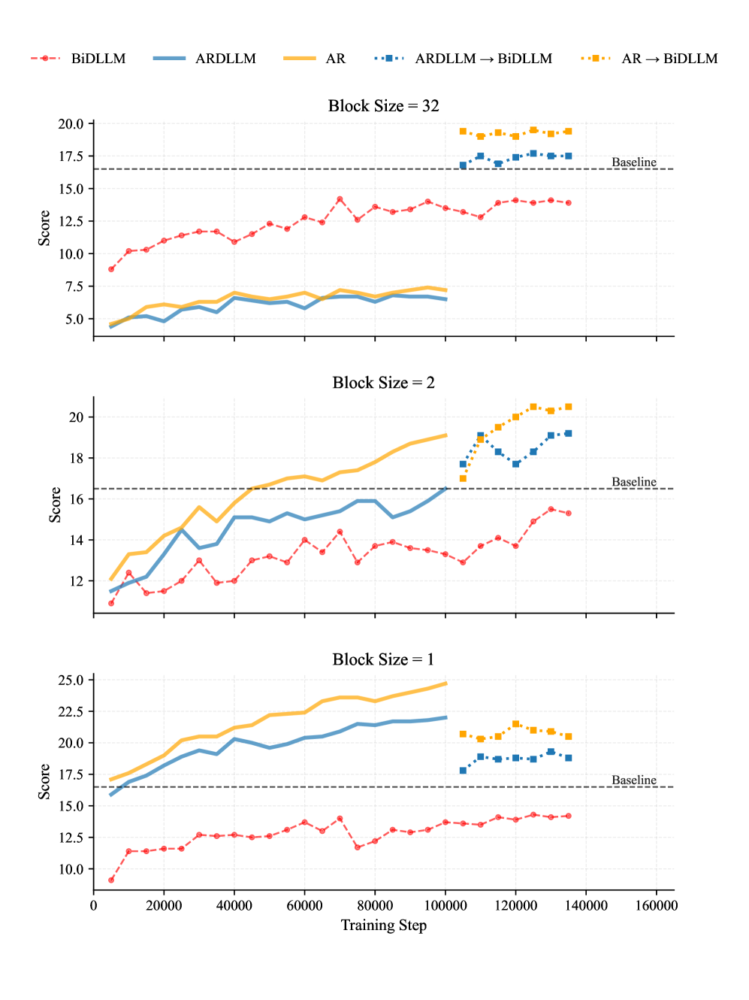
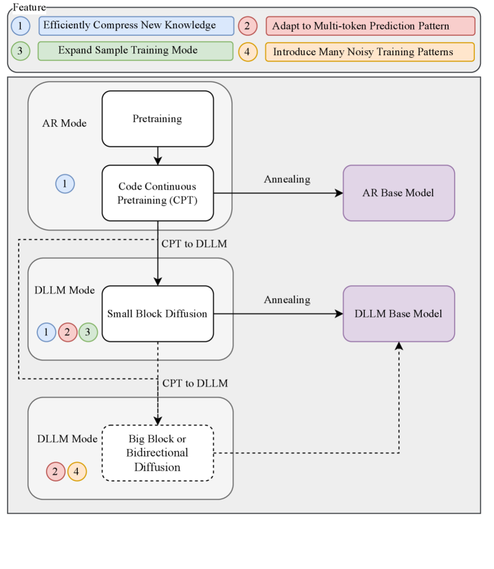
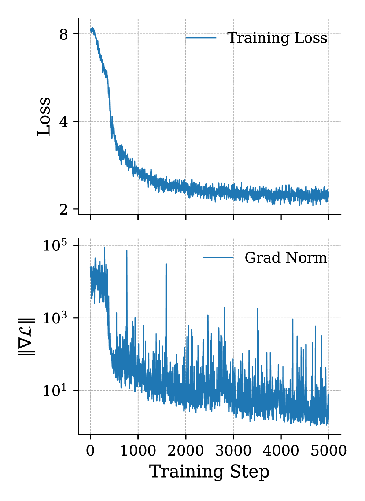
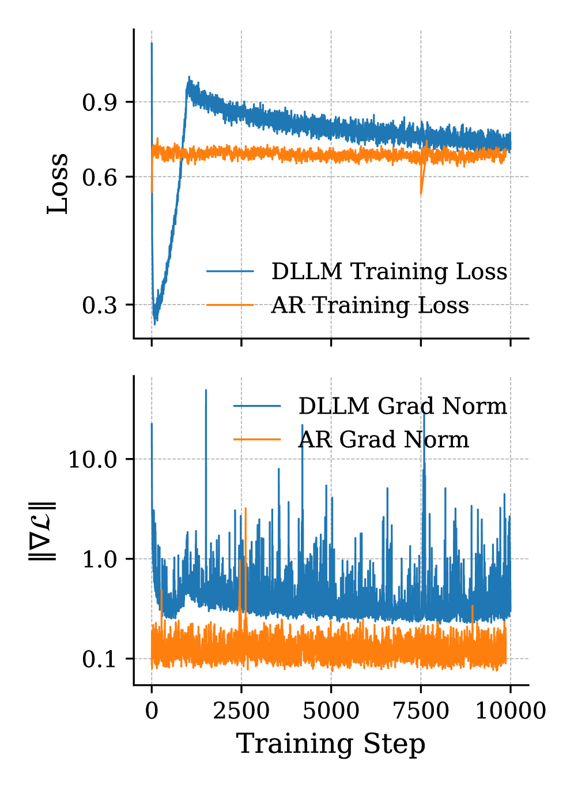
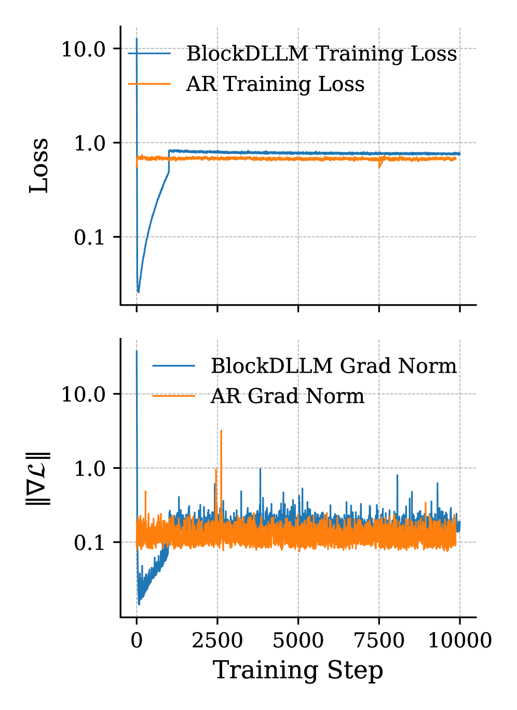
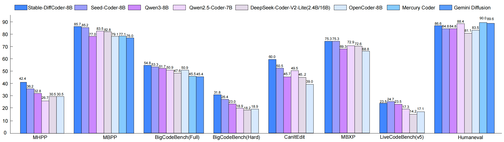

Stable-DiffCoder：在同一条 AR 流水线里换上块扩散训练，代码模型能不能变强
Stable-DiffCoder: Pushing the Frontier of Code Diffusion Large Language Model
阅读状态、进度与收藏只保存在你的浏览器里。本页依据 arXiv v2（2026-01-23；与 v1 相比只改了图 1 的图例），表格数字取自 arXiv 的 HTML 版并逐项核对过 PDF；推理细节取自 Hugging Face 上的官方模型代码 modeling_stable_diffcoder.py（2026-03 适配 transformers 5.3.0 的版本）；AR 对照 Seed-Coder 的训练细节取自 Seed-Coder 技术报告（arXiv 2506.03524）。截至 2026-10-20，本站没有找到这篇论文的会议或期刊版本。
逐节精读
这部分按论文的章节顺序，用本站自己的话把整篇论文从头讲一遍。读懂某个概念需要的背景知识，会在第一次用到它之前单独讲清楚（青色框）。每个结论都尽量说出“因为什么、所以什么”。这篇论文以 CC BY 4.0 发布，所以页面里直接使用了论文的原图（图 1 用的是官方仓库里图例已经修正的同一张图）；原图没有画到的概念，用本站的示意图补上。标“推算”的数字是本站根据论文或官方代码算出来的，标“读图”的数字是本站从原图上读出来的约值，都不是论文原话。每节末尾有英文原文的链接。
0 导读：这篇论文解决什么问题
扩散语言模型（下文按论文的写法记作 DLLM）生成文字的方式和 ChatGPT 这类自回归（AR）模型不同。AR 模型从左到右一个 token 一个 token 地写；掩码扩散模型则先在回答的位置上铺满 [MASK]（下文简写成 [M]），再一轮一轮地把它们换成真正的 token。训练时，它把一段干净的文本随机遮掉一部分，学着把被遮的部分猜回来。到 2025 年，代码方向已经有了几个从 AR 代码模型改造出来的扩散模型，比如苹果的 DiffuCoder 和港大的 Dream-Coder，但它们在代码基准上仍然落后于同规模最强的 AR 代码模型。
问题在于，这些比较很难说明“扩散”这个训练目标本身是好是坏。因为每篇论文都同时改了好几样东西：起点模型、训练数据、训练流程。这篇论文想回答一个更干净的问题：如果数据和算力都固定，扩散训练额外带来的那些“训练方式”（同一条样本被遮成很多种不同样子来学），能不能真的让模型更强？作者来自华中科技大学和字节跳动 Seed，后者正是 AR 代码模型 Seed-Coder 的出品方，所以他们可以直接复用 Seed-Coder 的结构、数据和训练流水线，只在其中一段把 AR 训练换成扩散训练。
论文做了三件事。第一，它提出一个叫“token 推理知识”的分析框架：一个被遮住的 token 能不能被“推理”出来，取决于训练时它能看到的上下文；全序列随机遮挡会制造大量证据被抹掉的上下文，而块很小的块扩散和 AR 一样，总能看到一段干净的左侧上下文。作者在 2.5B 规模上比较了三种训练课程，得出的配方是：新知识先用 AR 学，再用小块扩散继续训练。第二，它给出两个让 AR→扩散的切换训练得稳的技巧：warmup（开头先只遮很少的 token，并去掉损失权重）和块级截断噪声调度（保证每个块里至少有一个 token 被遮）。第三，它用这套配方训练了 8B 的 Stable-DiffCoder：从 Seed-Coder-8B 退火前的检查点出发，用块长为 4 的块扩散继续预训练 1.3T 个 token，再用 Seed-Coder 的 SFT 数据做指令微调。
最重要的结果是：在作者报告的 14 项指令模型指标里，Stable-DiffCoder-8B-Instruct 有 9 项高于 Seed-Coder-8B-Instruct，涨得最多的是代码编辑 CanItEdit（60.0 对 50.5）、较难的 MHPP（42.4 对 36.2）和 BigCodeBench 难题集（31.8 对 26.4）；但 LiveCodeBench（23.5 对 24.7）、Aider（54.9 对 57.1）、NaturalCodeBench 等 4 项更低，多语言 MBXP 打平（统计为推算，见 §8）。读这些数字之前要先知道几件事：AR 一方的数字全部照抄自 Seed-Coder 报告，没有重跑；两边最后一段训练的 token 数（1.3T 对约 1T）和上下文长度（8K 对 8K→32K）并不一样，AR 一方还多做了一轮偏好优化（DPO）；论文没有报告任何速度，也没有写评测时用了多少解码步数。下面的示意图先把两条流水线并排画出来。
读完这部分，你应该能回答这几个问题：
- 什么是块扩散？为什么块长选 4 这么小，几乎和 AR 一样？
- “token 推理知识”是什么意思？为什么作者认为全序列随机遮挡会学到错误的关联？
- 从 AR 切换到扩散训练时，损失和梯度为什么会出现尖峰？warmup 和块级截断噪声各自解决了哪个问题？
- “同数据、同结构”的对照到底控制了哪些变量、没有控制哪些？
- 和 DiffuCoder、Dream-Coder、Seed Diffusion 相比，它的起点、数据量和评测口径有什么不同？
- 这篇论文能不能说明扩散模型写代码“更快”？
1 引言：扩散训练多出来的“训练方式”能不能换来更强的模型
从零训练一个大的扩散语言模型非常昂贵。LLaDA 8B 是从零训练的，用了 2.3T token。2024 年以后更常见的做法是“改造”：拿一个已经训练好的 AR 模型，保留它的全部权重，只把训练目标换成扩散的“遮住再猜回来”，把注意力从只能看左边改成能看两边（或者按块看），然后继续训练一段。这一段继续训练叫持续预训练（continual pretraining，下文简称 CPT）。因为 AR 模型已经学会了语言和代码的大部分知识，改造需要的数据比从零训练少得多：DiffuCoder 用了 130B token，Dream-Coder 用了 322B token，Dream 7B 用了 580B token。
这种做法有一个副作用：比较“扩散模型”和“AR 模型”时，扩散模型其实是“AR 模型 + 一段额外的扩散训练”。如果这段额外训练用的数据 AR 对手没见过，扩散模型分数更高也可能只是因为多学了数据。这正是本文想避开的混淆。
作者先讲代码为什么天然“不是从左到右”的：程序员经常先写骨架再填中间，先写个草稿再改，读到后面再回头改前面，几个互不依赖的函数也可以同时写。AR 模型严格从左到右生成，用不上这些结构；扩散模型把生成看成反复去噪，可以不按顺序、按块地生成。
扩散还有第二个、在训练侧的好处。它在训练时对同一条干净样本随机施加各种遮挡，相当于把一条样本扩充成了很多条不同的“填空题”。论文把每一种遮挡方式称为一种训练方式（training mode）。对代码来说，高质量的样本和冷门语言的样本都很少，如果每条样本能被“多用几次”，模型也许能从中榨出更多信息。2025 年有几篇工作在数据有限、反复训练多轮的设置下观察到扩散模型比 AR 模型更“耐用”（见 Diffusion Beats Autoregressive in Data-Constrained Settings 精读）。
可是近一年大家关注扩散模型，主要是因为它有并行生成、推理更快的潜力，扩散对模型质量的影响反而说不清。一方面，已有的扩散代码模型在总体准确率上还落后于强 AR 基线；另一方面，以往的工作往往同时改变数据、结构和训练流程，所以没法把差距归到某一个因素上。作者把要回答的问题写得很直接：在数据和算力固定的条件下，扩散引入的额外训练方式，能不能真正提高模型能力？
为此作者分两步走。先在 2.5B 的模型上做受控实验，研究扩散模型怎样才能高效地学到新知识；再根据观察到的规律训练 Stable-DiffCoder。它复用 AR 模型 Seed-Coder 的流水线和数据，从 Seed-Coder 退火之前的检查点出发，用块长为 4 的小块扩散做 1.3T token 的 CPT。作者说，选退火前的检查点是为了保留表示的“可塑性”，而小块扩散能在此基础上引入一次预测多个 token 的模式。本站的理解是：退火阶段学习率会降得很低，模型的权重逐渐定型，在定型之前换训练目标，模型更容易适应；块长只有 4，模型又能基本保持 AR 时期的习惯。为了让训练更适合扩散模型，作者设计了 warmup 流程和块级截断噪声调度（§4、§5）。
引言的结论是：无论是基座模型还是指令模型，Stable-DiffCoder 几乎全面超过同规模的 AR 对手 Seed-Coder，并且在很多指标上是 8B 级扩散代码模型里最好的。作者据此认为，只要课程和训练设计得当，扩散模型在代码理解和生成的质量上不仅能追平、还能超过 AR 模型，而且这还没算上推理速度可能带来的好处。
- “几乎全面超过”是引言的措辞。§7、§8 会逐项列出：基座模型的 MBPP+ 和多语言 MultiPL-E 里的 C++、TypeScript、JavaScript，指令模型的 LiveCodeBench、Aider、NaturalCodeBench 和 CRUXEval 的 Input-CoT，都低于 Seed-Coder。
- “还没算上速度”的意思是，这篇论文完全没有测速度，它讨论的只是质量。块长为 4 的模型能并行多少，要看解码时每步定几个 token，论文没有给出（§6.2）。
2 预备知识：AR、掩码扩散与块扩散
2.1 AR 模型：永远只看完整、干净的左边
AR 语言模型把一段序列 \(\mathbf x_{1:N}\) 的概率拆成一串条件概率的乘积，每个 token 只依赖它前面的所有 token：
训练时，Transformer 用一张下三角的“因果”注意力掩码，让第 \(i\) 个位置只能看到第 1 到第 \(i\) 个 token，于是一次前向就能同时算出所有位置“预测下一个 token”的损失。对后文最重要的一点是：AR 训练里，每个被预测的 token 看到的上下文永远是它左边完整、干净的那一段。论文指出 AR 生成的缺点是一个一个地写，速度慢，也没有机制同时考虑序列的多个部分。
2.2 掩码扩散：随机遮住，按 \(1/t\) 加权地猜回来
掩码扩散模型定义了一串越来越“脏”的序列：\(\mathbf x^0\) 是干净文本，加噪过程把 token 逐步替换成 [M]，直到全部变成 [M]；生成时反过来，从全 [M] 出发一步步还原。几篇理论工作（MDLM、MD4、RADD）证明，这个过程的变分下界（ELBO）可以化简成一个加权的交叉熵：
读法是：随机抽一个遮挡程度 \(t\)，每个 token 以概率 \(t\) 被换成 [M]（论文 §2.2 用的线性调度），模型看着被遮过的整条序列，只在被遮的位置上猜原来的 token，猜错的代价相加，再乘上权重 \(w(t)\)。线性调度下 \(w(t)=1/t\)。
遮挡比例为 \(t\) 时，一条长 \(N\) 的序列平均只有 \(tN\) 个位置被遮、参与计算损失。如果不加权，\(t\) 小的样本贡献的损失天然就小。乘上 \(1/t\) 之后，每个 \(t\) 的期望贡献都相当于“\(N\) 个 token 的平均损失”，整个目标才恰好是负对数似然的一个上界（详细推导见 MDLM 精读 §3.6）。
代价是：\(t\) 很小时，权重很大，而参与计算的 token 又很少。遮 10% 时权重是 10，遮 0.1% 时权重是 1000。这一步的损失由偶然被遮中的一两个 token 决定，又被放大了上百倍，梯度的波动自然很大。论文 §3.2 把这一点列为 AR→扩散切换不稳定的三个原因之一（本页 §4）。
论文还引用了 RADD 的一个结论，§3 会用到它：在最优情况下，模型在被遮位置 \(i\) 上应该输出的分布，可以写成一个只依赖时间的系数，乘以“给定所有没被遮的 token，第 \(i\) 个位置是什么”的干净数据条件分布 \(p_0(\hat x_i\mid \mathbf x^{\mathrm{UM}}_t)\)。换句话说，时间 \(t\) 只影响一个系数，模型真正要学的，是一道道“看着露出来的 token 填空”的题。哪些 token 露出来，就决定了这道填空题好不好答。
2.3 块扩散：块与块之间自回归，块内部做扩散
论文 §2.2 末尾提到，近来有一批工作把 AR 的结构和扩散结合起来，称为块扩散（BD3-LM、SDAR、Fast-dLLM v2、LLaDA2.0 等）。做法是把序列切成长为 \(B\) 的块：块与块之间按从左到右的顺序，后面的块能看到前面所有块的干净内容；只有当前这一块内部做“遮住再猜”。这样，模型学的是“在一段几乎没被破坏的前文之后，生成一小段”。块长是一个旋钮：\(B=1\) 时退化成 AR，\(B\) 等于整条序列时就是普通的全序列掩码扩散。训练时怎样一次前向就让所有块都练到，见 BD3-LM 精读 §4.2 和 SDAR 精读 §3.1：把加噪序列和干净序列拼在一起，用一张特制的注意力掩码规定谁能看谁。生成时一块一块地写，写完的块存进 KV 缓存，见 BD3-LM 精读 §4.4。
AR 模型第 \(i\) 个位置的输出头，学的是“下一个 token 是什么”，即位置 \(i\) 的输出去预测位置 \(i+1\) 的 token。掩码扩散的标准写法（LLaDA、SDAR）则是位置 \(i\) 的输出预测位置 \(i\) 自己：那个位置是 [M]，就猜它原来是什么。从 AR 改造时有两种选择。Dream、DiffuCoder、Dream-Coder 保留“错开一位”（shift），让被遮的位置 \(i\) 由位置 \(i-1\) 的输出来预测，好处是 AR 时期学到的输出头可以原样复用。Stable-DiffCoder 最终选择不错开（no-shift），理由是吸收态扩散里每个被遮位置预测的就是它自己，输入和预测目标在 token 层面和句子层面都是对齐的（论文 §4.1）。有意思的是，§3.2 的 warmup 实验最初用的是保留 shift 的版本，最后才换成不错开（原文图 4 右）。
2.4 扩散训练被寄予的两个期望
论文把扩散训练的好处归成两条。第一条是推理侧：并行解码的速度上限更高，Seed Diffusion、Mercury、Gemini Diffusion 等工业模型都在宣传这一点。第二条是训练侧：同一条样本可以在各种不同的加噪轨迹下被反复使用，从稀有的高质量样本和长尾样本里榨出更多信息，从而可能提高整体能力。本文要检验的是第二条，而且是在受控条件下检验：给定和一个强 AR 基线完全相同的数据、结构和训练流水线，插入一段块扩散训练，看看扩散多出来的训练方式能不能转化成代码理解和生成准确率的实际提升，而不只是换了一种解码方式。
3 方法一：训练时看到什么样的上下文，决定了模型学到什么
3.1 动机：随机遮挡的“数据复用”不是免费的
作者的出发点有三条。第一，随机遮挡虽然能让同一条样本以不同的样子被反复学习，但计算代价很大：每多一种遮挡方式，就要多算一遍。第二，有些遮挡方式几乎没有训练价值，这一点 Train for the Worst, Plan for the Best 已经观察到：很多被遮的 token 所在的上下文对正确答案约束很弱，这时梯度主要在拟合“哪些 token 常常一起出现”，而不是一条清晰的推理规则。第三，即使模型在某些训练上下文里高效地学到了知识，这些知识也不一定能在推理时用上，因为训练和推理时模型看到的上下文可能根本不是一类。
3.2 token 推理知识：一道填空题有多少个“合理答案”
作者用一个算术的小例子说明问题。设想一条干净的训练序列是：
如果随机遮挡恰好把中间和结尾大段遮住，变成“a = 1, b = 2, [M] … [M] a + b = [M]”，那么最后那个 [M] 的正确答案是 7（它属于第二个算式），可是模型能看到的证据只有 a = 1, b = 2，按这些证据推理，答案应该是 3。于是这一条训练样本实际上在教模型：“看到 a=1、b=2 之后，a+b 等于 7”。从这个被破坏的视角，模型学不到“a+b 等于前面 a 与 b 之和”这条规则，只能学到“a + b = 后面通常跟一个数字”，以及“a=3、b=4 和 7 经常一起出现”这类共现关系，甚至被误导。反过来，如果遮挡是“a = 1, b = 2, a + b = [M]”，上下文就把答案牢牢限定成 3；许多这样的样本累积起来，模型就能学到一条从证据到答案的稳定映射，也就是算术规则，而不是死记硬背。
作者把这个直觉写成一个定义。设 \(c\) 是从干净序列里取出、用来预测某个 token \(x_i\) 的上下文：AR 训练时 \(c_{\mathrm{AR}}=\mathbf x_{\lt i}\)，随机遮挡的扩散训练时 \(c=\mathbf x^{\mathrm{UM}}_t\)（所有没被遮的 token）。真实数据在这个上下文下的条件分布 \(p_0(\cdot\mid c)\) 定义了一个候选集：
也就是“概率不低于某个小阈值 \(\varepsilon\) 的合理答案”有哪些、一共 \(K(c)\) 个。一条训练样本所含的“token 推理知识”，就是限制在候选集上的条件分布 \(p_0(\mathcal C(c)\mid c)\)；模型要做的是让自己的 \(p_\theta(\cdot\mid c)\) 在候选集上逼近它。作者把这比作一个多分类问题，学起来有多难取决于两件事：候选集有多大（\(K(c)\)），以及每一种“上下文—标签”组合在训练中出现了多少次。
按 \(K(c)\) 的大小，作者区分了三种情形：
- 推理区：\(K(c)\) 很小，正确 token 的概率很大，从上下文到答案几乎是确定的映射。相似上下文的样本给出方向一致的梯度，很快就能把一条稳定的规则练出来。
- 相关区：\(K(c)\) 中等或较大，正确 token 只是许多差不多可能的候选之一。模型仍能学到它和上下文里某些模式相关，但相似上下文的样本经常对应不同的答案，梯度互相部分抵消，更新主要在拟合嘈杂的共现关系。
- 噪声区：\(K(c)\) 非常大（和词表一个数量级），条件分布几乎是平的，上下文对答案几乎没有信息，模型只能死记个别的“上下文—答案”对。
作者接着说，\(p_0\) 是按真实数据定义的，极不自然的上下文出现的概率可以忽略；而上下文里露出的相关证据越多（更长、更干净），条件熵就不会增加，候选集通常也会变小。由此得出关键的一步：AR 和小块的块扩散，上下文通常包含一长段连续、干净的左侧证据，这也符合自然语言本身从左到右的结构，所以采样到的上下文 \(K(c)\) 往往较小，知识能被高效地“压缩”进模型；全双向或大块的扩散则很容易产生原文式 7 那样的上下文，落入相关区或噪声区，压缩知识的效率大大降低。
3.3 上下文—标签对的数量，以及训练与推理是否对得上
除了每道填空题本身好不好答，还有一个数量问题。要可靠地学会与某个上下文 \(c\) 相关的知识，模型需要见到足够多有信息量的“上下文—标签”对 \((c,x_i)\)。随机遮挡会生成五花八门的上下文，大大增加了模型需要学的组合的数量。如果总数据量固定，这种多样化就会摊薄每一条具体知识对应的有效样本数，学习效率下降，模型不得不比 AR 模型多“重学”很多遍同样的知识（论文引用了几篇扩散模型扩展规律的研究）。作者承认这些随机上下文可以看成数据增强，但按上面对 \(K(c)\) 的分析，其中很多落在相关区或噪声区，对应不到清晰的规则，有些还会像式 7 那样教错。证据被破坏得越厉害（全双向、大块），这种问题上下文出现得越频繁。
给一个数量级的感觉（推算）：AR 训练里，一条长 \(N\) 的序列只产生 \(N\) 种上下文，每个位置一种。块长为 4 的块扩散里，左侧上下文是固定的，变化只发生在块内：4 个位置有 \(2^4-1=15\) 种非空遮挡方式，所以每个块最多多出十几种上下文。全序列随机遮挡时，一条长 \(N\) 的序列有 \(2^N\) 种遮挡方式，\(N\) 为几千时这个数字是天文数字，任何一种具体遮挡几乎都只会被见到一次。
另一个问题是训练和推理的对齐。记训练时采样到的上下文集合为 \(\mathcal C_{\text{train}}\)，推理轨迹上实际遇到的上下文集合为 \(\mathcal C_{\text{infer}}\)，两者越接近越好。例如，用块长 \(B\) 的块扩散训练、推理时也用块长 \(B\) 从左到右逐块解码，推理时的上下文就和训练时的高度一致，学到的知识可以直接用上。
作者据此总结了两条原则：（1）模型应当看到干净、可靠的推理证据，这样才能学到清晰的规则；（2）采样到的不同上下文的数量不应膨胀得太厉害，而且它们的形式要尽量贴近推理时会遇到的上下文。
- 论文没有在任何数据上测量 \(K(c)\)，阈值 \(\varepsilon\) 也没有给定；三个区是用来组织直觉的分类，而不是可以检验的预测。
- “证据越多，条件熵不会增加”只在平均意义上成立：\(H(X\mid C,D)\le H(X\mid C)\) 是对所有 \(D\) 的取值求平均后的结论。对某一个具体的上下文，多露出一个 token 完全可能让答案更不确定（比如露出的是一个罕见的变量名）。
- AR 训练也并不总在推理区：文件开头的 token 几乎没有上下文，同样处在噪声区。论文的论点是“小块扩散与 AR 在这一点上相近，而全序列扩散差得多”，是相对的比较。
3.4 2.5B 规模的课程实验：新知识该用哪种方式学
为了检验上面的分析，作者做了一个受控实验。起点是一个用通用领域数据训练好的 2.5B AR 模型，代码数据作为它没见过的“新知识”，用于持续预训练。在相同的算力预算下，比较三种学习新知识的课程：
- AR → BiDLLM：先用纯 AR 在新数据上继续训练，再持续预训练成一个双向（全序列）扩散模型；
- ARDLLM → BiDLLM：先用“因果结构的扩散模型”（论文称为 AR 式扩散：注意力仍是因果的，训练目标换成遮挡后猜回；论文没有进一步交代它的具体形式）继续训练，再转成双向扩散模型；
- BiDLLM：直接把 AR 检查点持续预训练成双向扩散模型，在双向扩散的模式下学新知识。
评测用 LLaDA 式的分块解码：把回答切成块，从左到右逐块生成，块内再按扩散的方式逐步揭开（每步揭开几个位置，论文没有写）。块长分别取 1、2、32，分数是多个代码基准的平均分。

论文报告的总体排序是：同样算力、完成持续预训练之后，方案 1 优于方案 2，方案 2 优于方案 3。下表是本站从图上读出的约值，方便对照文字。
| 块长 | 纯 AR（10 万步） | ARDLLM（10 万步） | BiDLLM（约 13.5 万步） | ARDLLM→BiDLLM（终点） | AR→BiDLLM（终点） |
|---|---|---|---|---|---|
| 32 | ≈ 7.2 | ≈ 6.5 | ≈ 13.9 | ≈ 17.5 | ≈ 19.4 |
| 2 | ≈ 19.1 | ≈ 16.5 | ≈ 15.3 | ≈ 19.2 | ≈ 20.5 |
| 1 | ≈ 24.7 | ≈ 22.0 | ≈ 14.2 | ≈ 18.8 | ≈ 20.5 |
作者对曲线的解释如下。
- 方案 1 在转换之前，小块解码最好，大块解码很差。纯 AR 训练时，块长 1 或 2 的推理上下文和训练上下文几乎一样，满足上一小节的两条原则：模型看到的是干净的推理证据，上下文的种类也受控且与小块推理对齐。可是到块长 32 时，它比方案 3 还差，因为纯 AR 的训练上下文覆盖不到大块解码需要的双向模式：在因果注意力下，块内靠后的 token 影响不了靠前的 token，一次解码一整块时生成就不稳定。
- 方案 1 转成双向扩散之后，所有块长都表现很好。作者的理解是：AR 阶段已经在一个与小块推理对齐的上下文族里，把新的 token 推理知识高效地压缩进了模型；之后的双向扩散 CPT 主要是让模型适应大块的上下文分布。
- 转成全双向会让块长 1 的解码掉分。在块长 1 下，纯 AR 和 AR→BiDLLM 在转换后都损失了差不多的分数。但方案 1 在 AR 阶段学得更有效率，所以即使掉了分，最终仍然比其他方案高。
- 方案 2 也不错，转换后在块长 32 下超过方案 3。尽管它在训练中看到的干净证据和方案 3 差不多甚至更少。作者的解释是，AR 式扩散的训练上下文更像推理时常见的“提示在左、回答在右”的格式，推理证据大多在左边，所以训练与推理更对齐，这个优势在两者最终都变成全双向模型之后依然保留。
基于以上分析和实验，作者推荐的训练流程是：（1）新知识先用 AR 训练高效地压缩进模型；（2）再用小块扩散目标做 CPT，利用它的数据增强性质进一步提升质量；（3）如果想要更大块的扩散，就从第 2 步得到的模型出发继续 CPT。Stable-DiffCoder 只采用了前两步，对应下图通往“DLLM Base Model”的实线。

- 最终配方本身不在这个实验里。图 2 比较的都是转成全双向扩散模型的路线；Stable-DiffCoder 实际用的“AR → 块长 4 的块扩散”这一条，在 2.5B 规模上没有对应的曲线。从“AR 先学再转”到“转成小块扩散最好”，中间靠的是 §3.2–3.3 的论证。
- 这张图并没有显示扩散胜过 AR。块长 1 的子图里，纯 AR 继续训练 10 万步约 24.7 分（读图），比任何一条扩散曲线都高，包括多训练了约 3.5 万步的 AR→BiDLLM（约 20.5，读图）。所以在 2.5B 的实验里，这张图回答的是“要得到一个扩散模型，哪条路线损失最小”，而不是“扩散训练能不能超过继续做 AR”。后者是 8B 实验要回答的问题（§8）。
- “多个代码基准的平均分”具体是哪几个基准、每个点是否只跑了一次，论文没有写，也没有误差棒；相邻两点之间常有 1–2 分的起伏（读图），所以 1 分左右的差别不宜过度解读。
- “相同算力”在图上体现为相同的训练步数（三条路线终点都在约 13.5 万步）；论文没有给出批大小和每步 token 数。
英文原文 §3.1 ↗ · 原文图 2 ↗ · 原文图 3 ↗ · 相关：Train for the Worst 精读 §3（难的填空题）
4 方法二：warmup——让 AR 模型平稳地变成扩散模型
训练时，每一步都会算出损失对所有参数的梯度。把这些梯度拼成一个大向量，它的长度（L2 范数）叫梯度范数，大致表示这一步“想把参数推多远”。正常训练时梯度范数会稳定在某个水平；如果某一步突然大了成百上千倍，就叫梯度尖峰。尖峰的危害是，这一步的更新可能把模型推到一个很差的位置，之后要花很多步才能恢复，严重时损失直接发散。常见的保护措施有两个：一是梯度裁剪，把超过阈值的梯度按比例缩小；二是学习率 warmup，训练开头先用很小的学习率，再逐渐升到目标值，给模型一段适应的时间。（这篇论文没有提到它用了哪种梯度裁剪或学习率 warmup。）
这篇论文的 warmup 换了一个对象：它不是慢慢调高学习率，而是慢慢调高任务的难度，也就是遮挡比例。
论文先引用了 DiffuLLaMA（Gong 等，2024）的观察：从 AR 改造扩散模型的 CPT 对学习率非常敏感。作者补充说，在实践中损失和梯度范数稳不稳，还受模型结构（注意力模式、logit 的参数化）、数值精度和训练基础设施的影响，所以需要一个更稳健的 warmup。
为了尽量缩小 AR 与扩散在结构和目标上的差距，作者做了“最小改动”的尝试：沿用 AR 的输出头和 logit shift 的参数化，只把注意力从下三角的因果掩码改成双向的全注意力。即便如此，直接从 AR 切到扩散训练，初始损失仍然很高，梯度范数出现巨大的尖峰。作者把不稳定归结为三个原因：
- 注意力掩码变了，模型内部表示的分布发生了结构性的偏移：每个位置突然能看到右边的内容，原来只见过左边的那些层要重新适应。
- 任务变难了：遮掉大比例 token 再猜回来，比 AR 的“预测下一个”难得多。
- 损失权重 \(w(t)\)：由 ELBO 推出的权重在遮挡比例很低时很大（线性调度下遮 10% 时 \(w\approx 10\)），相当于给损失乘了一个放大系数，梯度范数也被放大，训练更不稳。
已有的一个办法是对注意力掩码做退火，即让模型先用因果注意力，再逐步放开到双向（DiffuLLaMA 的做法）。作者认为这对 FlashAttention 这类高度优化、假设掩码固定的内核很不方便，所以选择只对加噪过程做 warmup。标准做法里，遮挡程度在 \([0,1]\) 上均匀抽取；warmup 期间，作者给它设一个上限 \(u_{\max}\)，并让这个上限在 \(S_{\text{warmup}}\) 步内从一个很小的值（例如 \(10^{-3}\)）线性升到 1：
这样训练就成了一个从易到难的课程：开头几乎只遮极少数 token，任务接近 AR 式的重建，逐步过渡到完整的扩散模式。为了进一步压住梯度尖峰，warmup 期间还去掉了权重 \(w(t)\)，优化的是不加权的交叉熵：
warmup 结束后，恢复带权重的原始损失，遮挡程度回到在 \([0,1]\) 上均匀抽取。
作者报告，这样做之后 CPT 的过程平滑得多：在 AR→扩散的交界处，梯度范数的尖峰被大幅削弱；损失曲线呈现一种特征性的形状：先下降（任务很简单），随着遮挡比例升高又上升，最后再下降。warmup 期间损失的峰值明显低于直接切换的做法，最终的损失与 AR→AR 的 CPT 相当。去掉 logit shift、改成块扩散并用同样的 warmup，也观察到了类似的稳定表现。



- 三组图的设置不完全可比。左图的损失刻度（2–8）比另外两组大一个数量级，横轴只画到 5000 步；论文没有说明三组实验的模型规模、学习率、批大小、数据是否相同，也没有给出 \(S_{\text{warmup}}\) 的取值。所以左图和中图的差别里，有多少来自 warmup、多少来自别的设置，图上看不出来。
- warmup 期间的损失数值不能直接读成“任务有多难”。warmup 期间去掉了权重 \(w\)，损失是被遮 token 的交叉熵之和；如果它像通常那样再除以序列总长度，那么遮的 token 越少损失就越小，于是开头的低谷、随后的上升，有一部分只是“被遮的 token 变多了”。warmup 结束、权重打开时，右图的损失有一个明显的跳变，也和这一点吻合。这是本站的解读，论文只说开头下降是因为任务简单。
- “最终损失与 AR 相当”不等于“模型一样好”。扩散的损失是负对数似然的上界，AR 的损失是精确的负对数似然，两者数值接近说明训练回到了正常状态，但不能直接比较两个模型的质量。
- warmup 期间优化的是不加权的目标，它不是 ELBO；好在这一段很短，之后就回到标准目标。
- 论文没有说明 warmup 的上限 \(u_{\max}\) 和下一节的块级截断（遮挡比例至少 \(1/B\)）同时存在时谁优先。如果截断在后，那么 warmup 开头块扩散的遮挡比例其实被抬到了 \(1/4\)。
英文原文 §3.2 ↗ · 原文图 4 ↗ · 相关：Dream 精读 §2.2（DiffuLLaMA 与注意力掩码退火）
5 方法三：块级截断噪声调度——保证每个块都有东西可学
论文的出发点是这样的：块扩散训练时，每一步只在一个连续的块里遮挡，块外的 token 都保持干净、作为上下文。如果直接沿用为全序列设计的连续时间调度（每步抽一个遮挡比例 \(u\)，每个 token 以概率 \(u\) 被遮），那么当块长 \(B\) 很小时，相当一部分训练步给出的学习信号很弱，甚至为零。
原因可以算出来。块里有 \(B\) 个 token，每个以概率 \(u\) 被遮，被遮的个数 \(m\) 的期望是 \(Bu\)，一个都没被遮的概率是 \((1-u)^B\)。按线性调度，\(u\) 在 \([0,1]\) 上均匀分布，对 \(u\) 求平均：
块长 2 时是 1/3，块长 4 时是 1/5，块长 8 时是 1/9。也就是说，块长为 4 时，有五分之一的块里一个 [M] 都没有，这些块对损失毫无贡献；还有很多块只被遮了一个 token，却要乘上很大的权重 \(1/u\)。
作者没有重新设计全局调度，而是加了一条“块感知”的采样规则。每一步抽出 \(u\) 之后，把块内的遮挡比例截断成：
这条规则有两个作用。第一，块内被遮 token 数的期望 \(B\,u_{\text{blk}}\ge 1\)，每个块平均至少有一个监督信号。第二，权重 \(1/u_{\text{blk}}\) 最多是 \(B\)（块长 4 时最多是 4），不会因为 \(u\) 太小而变得极大，训练更稳。然后，块内每个 token 独立地以概率 \(u_{\text{blk}}\) 被遮，块外的 token 保持干净。为了确保每个块都对损失有贡献，再加一条兜底规则：如果抽完之后块里一个都没被遮（\(m=0\)），就在块里均匀随机选一个位置强制遮住。这样每一步每个块里都至少有一个被监督的 token，同时整体上仍保持原调度的大致形状。
和 BD3-LM 的“裁剪”调度比较一下更容易看清它的位置（见 BD3-LM 精读 §6.2）。BD3-LM 同样发现小块怕遮得太少，它的做法是把遮挡比例限制在一个区间 \([\beta,\omega]\) 内，两头都裁掉，并且在训练中按损失估计的方差搜索最优区间，块长 4 时选出的区间偏向重遮挡（例如 \([0.45,0.95]\)）。Stable-DiffCoder 只设一个固定的下限 \(1/B\)，上限不动，也不做搜索，再加一条“至少遮一个”的兜底。前者更讲究方差最小，后者更简单，目标只是“别让任何一步白算”。
- 论文没有任何关于这条规则的消融。截断和兜底对最终分数的影响有多大、与 BD3-LM 式的区间裁剪相比孰优孰劣，都没有数字。
- 截断和兜底改变了遮挡比例的分布，所以训练目标不再是标准 ELBO 的无偏估计（本站推论，BD3-LM 的裁剪调度也有同样的性质）。这对训练一个生成模型并不要紧，但如果有人用这个模型去估计似然或困惑度，就要回到标准调度去算。
- 论文说“每一步只遮一个连续的块”。按字面理解，一条 8192 token 的打包序列每步只有一个块（4 个 token）被监督，训练效率会极低；更可能的实现是像 BD3-LM、SDAR 那样让所有块各自独立加噪、一次前向同时训练。论文没有写明是哪一种，官方也没有公开训练代码。
6 实验设置：怎么训练、怎么解码、拿什么比、用什么考
6.1 训练设置
Seed-Coder 是字节跳动 Seed 在 2025 年 6 月开源的 8B 代码模型家族（基座、指令、推理三个版本，arXiv 2506.03524）。它的特点是数据管线以模型为中心：主要用大模型给 GitHub 代码、提交记录和代码相关网页打分过滤。结构沿用 Llama 3：8.2B 参数，隐藏维度 4096，分组查询注意力（32 个查询头、8 个键值头），词表 155,136，不共享输入输出嵌入。按它的报告，预训练共 6T token：先用学习率 \(3\times10^{-4}\) 在代码相关网页和数学网页上训 1T，再在精选代码上训 4T，这是“常规预训练”，上下文 8K；然后进入“持续预训练”，换成高质量数据和长上下文数据，学习率先降为原来的 \(1/\sqrt{10}\) 训 400B，再降到 \(3\times10^{-5}\) 训 600B，上下文分两步从 8K 扩到 32K。指令版先做约 300 万条数据、3 个 epoch 的 SFT，再用约 2 万对偏好数据做 DPO。
一个小出入：Seed-Coder 报告正文写的是 36 层，而 Seed-Coder-8B 和 Stable-DiffCoder-8B 在 Hugging Face 上的配置文件都是 32 层。按 32 层推算参数量约为 8.25B，与“8.2B”吻合（推算），36 层则会超过 9B，所以 32 层更可信。
论文 §4.1 交代的设置如下：
- 起点：Seed-Coder 退火前的检查点。作者的理由是保留表示的可塑性，便于模型在结构上适应新的目标与数据分布。论文没有说这个检查点训练了多少 token，按 Seed-Coder 的阶段划分，最自然的理解是 5T 常规预训练之后、学习率开始下降之前（本站推断）。
- 持续预训练：复用 Seed-Coder 的训练流水线，把它“多阶段持续预训练”的数据通过子采样压缩到总共 1.3T token，用块长 4 的块扩散目标训练，上下文 8192，序列打包（packing）。
- 参数化：不错开一位（no-logit-shift），与 LLaDA、SDAR 相同（§2.3 的提示框）。
- 打包样本互相可见：为了避免 flex attention 反复编译，打包在同一条序列里的不同样本之间的注意力不做隔离，这样每次前向都能复用同一张注意力掩码和同一个算子。
- SFT：完全复用 Seed-Coder 原来的 SFT 数据集；同样使用打包，但在每条样本后面随机追加 1–4 个
<eos>，让模型在按块生成时仍能输出任意长度的结果。
后两条值得多解释一句。打包是把多条短样本首尾相接拼成一条 8192 长的序列，省掉填充的浪费。通常的做法会让每条样本只看得见自己（“文档掩码”），但这张掩码每个批次都不一样；flex attention 这类按掩码编译内核的工具，掩码一变就要重新编译。作者干脆让样本互相可见，掩码就只剩固定的块因果结构。由于块之间是因果的，一条样本只能看到排在它前面的无关样本，这和很多 AR 预训练不做文档隔离的情况类似。作为对比，Fast-dLLM v2 选择了“块对齐的打包”，专门避免一个块横跨两条样本。
追加 1–4 个 <eos> 是为块解码服务的。生成时模型一次写 4 个位置，如果回答在某个块的中间就结束了，这个块剩下的位置必须填上结束符。训练时在每条样本后面随机补 1–4 个 <eos>，样本的结尾就会随机落在块内的不同位置，模型因此学会“写完了就用 <eos> 把块填满”。官方推理代码也正是这样处理的：一个块解完后，只要块里出现 <eos>，就从第一个 <eos> 处截断并停止。
6.2 推理：论文没写，官方代码是这样做的
论文正文没有描述解码算法，也没有给出评测时的步数、块长、温度和生成长度。能找到的只有 Hugging Face 上官方模型附带的 generate 实现和 README 的示例：块长 4，生成长度 512，步数 512，温度 0，按置信度挑选要揭开的位置（low_confidence），阈值不开。这些参数意味着每个块分 4 步、每步只定 1 个 token。
| 1 | 2 | 3 | 4 | 5 | 6 | 7 | 8 | 9 | 10 | 11 | |
|---|---|---|---|---|---|---|---|---|---|---|---|
| 提示（预填充） | |||||||||||
| 第 1 块：4 步去噪 | |||||||||||
| 第 1 块：写入缓存 | |||||||||||
| 第 2 块：4 步去噪 | |||||||||||
| 第 2 块：写入缓存 |
modeling_stable_diffcoder.py 整理。每格是一次前向：深蓝 = 预填充或去噪前向，浅红 = 把整块干净内容写进缓存的前向。去噪的每一步只把当前块的 4 个位置送进模型，读取前面所有块的 KV 缓存，然后把这一步新写进缓存的内容裁掉；整块揭开之后，再做一次前向把这块的干净 KV 正式写进缓存。块内注意力双向、块间因果，所以前文的 KV 缓存是精确的，不是近似。按这个实现算一笔账（推算）：生成 512 个 token 需要 128 个块，每块 4 次去噪前向加 1 次写缓存前向，共约 640 次前向，平均每次前向产出 0.8 个 token；同样长度的 AR 模型需要 512 次前向。每次前向处理 4 个位置而不是 1 个，在显存带宽受限的小批量解码里多出来的计算几乎是免费的，但前向次数更多，所以在这组默认参数下，它不会比 AR 快。官方代码还提供一个阈值参数：设了阈值，就在每步把置信度超过阈值的位置一次全部揭开（至少揭开一个），这就是 Fast-dLLM 的置信度并行解码，可以让每步定下多于 1 个 token；但论文和 README 都没有报告开阈值后的速度和分数。另外，代码注明目前只支持批大小 1。
基座模型的模型卡还给出了“填中间”（FIM）的用法：沿用 Seed-Coder 的后缀—前缀—中间（SPM）特殊 token，把前缀和后缀放进提示，让模型从左到右生成中间部分。也就是说，官方的填空用法走的是 AR 时代的 FIM 格式，而不是让扩散模型直接在中间铺 [M] 去填。
6.3 对照模型
AR 对照包括 StarCoder2、DeepSeek-Coder、CodeQwen1.5、OpenCoder、Qwen2.5-Coder、Seed-Coder、CodeLlama、Llama 3.1（指令表里还有 Yi-Coder、Qwen3-8B、Codestral 等）；扩散对照包括 LLaDA、Dream、DiffuCoder、Dream-Coder、LLaDA-MoE、Fast-dLLM v2、SDAR、Seed-Diffusion-Preview、LLaDA2.0、SDLM、WeDLM、Mercury Coder 和 Gemini Diffusion。本站核对过：表中 Seed-Coder-8B 的所有数字与 Seed-Coder 报告的对应表格逐项相同，也就是说，最关键的 AR 对照没有在本文的评测环境里重跑。Mercury Coder、Gemini Diffusion、Seed-Diffusion-Preview 的大小一栏是“-”，它们的数字来自各自厂商的报告。
6.4 评测基准
代码基准通常这样打分：每道题给一段描述（有时是函数签名加注释），模型写出代码，评测程序在沙箱里运行这段代码，跑一组隐藏的单元测试，全部通过才算做对。pass@k 指“生成 k 份答案里至少有一份全部通过”的概率；pass@1 就是只生成一份时做对的比例。用贪心解码时，pass@1 就是做对的题目占比；用采样时，一般生成 \(n\) 份、数出通过的 \(c\) 份，用无偏估计 \(1-\binom{n-c}{k}/\binom{n}{k}\) 计算（\(k=1\) 时就是 \(c/n\)）。论文没有说明评测用的是贪心还是采样。
测试越多，越难靠“碰巧通过几个样例”蒙混过关。EvalPlus 给 HumanEval 和 MBPP 补充了大量测试，带“+”的版本更严格，所以同一个模型的 HE+ 不会高于 HE，通常要低几分。
| 基准 | 考什么 | 规模与口径（论文 §4.2） |
|---|---|---|
| HumanEval / HumanEval+ | Python 函数补全 | 164 题；“+”版测试约为原来的 80 倍；用 EvalPlus 评测 |
| MBPP / MBPP+ | Python 小程序 | EvalPlus 人工核验子集 399 题；“+”版测试约 35 倍 |
| CRUXEval | 读代码推理执行结果 | 800 个 Python 函数；Input-CoT 由输出反推输入，Output-CoT 由输入推输出 |
| MultiPL-E | 多语言函数补全（基座） | HumanEval 翻译成 18 种语言，报告其中 8 种 |
| MHPP | 更难的 Python 题 | 需要通过官方提交接口获得分数，以减少数据污染 |
| BigCodeBench | 调用真实库的编程任务 | 1,140 题、139 个库、7 个领域，平均每题 5.6 个测试；报告全集与难题集（Completion） |
| LiveCodeBench v5 | 竞赛题，按时间窗防污染 | 与 Seed-Coder 相同的 v5 设置，题目发布于 2024-10 至 2025-02 |
| MBXP | 多语言小程序（指令） | MBPP 翻译成多种语言，报告 13 种 |
| NaturalCodeBench | 真实用户问题 | 402 题，Python 与 Java，中英文提问 |
| Aider | 在已有代码上按指令修改 | 133 道 Exercism 练习，“whole” 格式（输出整个文件），tries=2（看到测试失败后可再试一次） |
| CanItEdit | 按指令编辑代码 | 105 道手写题，指令分详细与简略（“懒”）两种 |
7 基座模型的结果：Python 补全、多语言与代码推理
7.1 HumanEval 与 MBPP（原文表 1）
基座模型用 EvalPlus 的对话式提示模板评测。下表摘出原文表 1 中与本文最相关的几行。
| 模型（基座） | 类型 | HE | HE+ | MBPP | MBPP+ |
|---|---|---|---|---|---|
| Qwen2.5-Coder-7B | AR | 72.0 | 67.1 | 79.4 | 68.3 |
| OpenCoder-8B-Base | AR | 66.5 | 63.4 | 79.9 | 70.4 |
| Seed-Coder-8B-Base | AR | 77.4 | 68.3 | 82.0 | 69.0 |
| DiffuCoder-7B-Base | 扩散 | 67.1 | 60.4 | 74.2 | 60.9 |
| Dream-Coder-7B-Base | 扩散 | 66.5 | 60.4 | 75.9 | 61.6 |
| WeDLM-8B-Base | 扩散 | 75.0 | 68.9 | 67.0 | - |
| Stable-DiffCoder-8B-Base | 扩散 | 79.3 | 73.8 | 83.6 | 67.7 |
论文的说法是：在约 8B 的扩散模型里，它在 HumanEval(+) 和 MBPP(+) 上都是最好的；和同规模 AR 模型比，HumanEval、HumanEval+、MBPP 都更高，只在 MBPP+ 上略低。对 Seed-Coder-8B-Base，HE 高 1.9、HE+ 高 5.5、MBPP 高 1.6，MBPP+ 低 1.3。HumanEval 只有 164 题，HE 上的 1.9 分大约相当于多做对 3 道题，HE+ 上的 5.5 分大约是 9 道（推算）。
7.2 多语言 MultiPL-E（原文表 2）
在 MultiPL-E 的 8 种语言上，Stable-DiffCoder-8B-Base 的平均分是 71.2，Seed-Coder-8B-Base 是 67.6，是表中约 8B 模型里最高的，也高于 14B 的 Qwen2.5-Coder（62.3）。涨幅最大的是 C#（70.3 对 53.8，+16.5）和 PHP（74.4 对 63.9，+10.5）。作者的假设是：这两种语言在训练语料里很稀少，扩散式的随机遮挡把同一条样本以多种“遮挡—还原”的视角反复呈现给模型，放大了低资源代码的学习信号，从而提升了数据稀缺语言的泛化。
- “C# 与 PHP 在语料里稀少”是作者的说法，论文没有给出各语言在 1.3T 数据里的占比，也没有做对照实验（例如把同样的数据用 AR 多训几轮）来区分“扩散的数据增强”和“多训了 0.3T token”这两种解释。
- 同样作为语料里的主流语言，TypeScript 和 JavaScript 却分别降了 2.6 和 4.5 分，论文没有讨论。
- MultiPL-E 每种语言约 160 题，C# 上的 16.5 分大约是 26 道题（推算），这是一个不小的差距；但其他语言 1–3 分的差别只相当于几道题。
- 论文这一小节的标题写的是“MBXP”，正文讨论的却是 MultiPL-E（表 2）；MBXP 是指令模型的评测（§8）。
7.3 代码推理 CRUXEval（原文表 3）
CRUXEval 只有 Python 题，要求模型读懂一个函数，由输出反推输入（Input-CoT）或由输入推出输出（Output-CoT），两者都允许先写推理过程。Stable-DiffCoder-8B-Base 是 53.8 / 60.0，Seed-Coder-8B-Base 是 52.0 / 54.8，Output-CoT 高 5.2 分（800 题里约 42 道，推算）。作者的解释有两条：适度的随机遮挡目标能增强模型的推理能力；CRUXEval 的输入和输出本身是结构化的，不严格遵循从左到右的因果逻辑，任意顺序建模让扩散模型能更全面地把握这些部分之间的关系。需要补充的是，Input-CoT 一项上 7B 的 Qwen2.5-Coder 基座是 56.5，仍然高于 Stable-DiffCoder；而“任意顺序建模”这个解释与块长只有 4、生成基本从左到右的事实之间，论文没有进一步说明。
英文原文 §4.3 ↗ · 原文表 1 ↗ · 表 2 ↗ · 表 3 ↗
8 指令模型的结果：生成、推理与编辑

8.1 代码生成（原文表 4–7）
| 基准（指令模型） | Stable-DiffCoder-8B | Seed-Coder-8B | Qwen2.5-Coder-7B | Qwen3-8B | Dream-Coder-7B | DiffuCoder-7B |
|---|---|---|---|---|---|---|
| HumanEval / HE+ | 86.6 / 82.3 | 84.8 / 78.7 | 88.4 / 84.1 | 84.8 / 80.5 | 82.9 / - | 72.0 / 65.2 |
| MBPP / MBPP+ | 85.7 / 72.8 | 85.2 / 71.2 | 83.5 / 71.7 | 77.0 / 67.2 | 79.6 / - | 75.1 / 61.9 |
| MHPP | 42.4 | 36.2 | 26.7 | 32.8 | - | - |
| BigCodeBench 全集 / 难题 | 54.8 / 31.8 | 53.3 / 26.4 | 48.8 / 20.3 | 51.7 / 23.0 | - | - |
| LiveCodeBench v5 | 23.5 | 24.7 | 17.3 | 23.5 | - | - |
| MBXP（13 种语言平均） | 75.3 | 75.3 | 72.9 | 69.3 | - | - |
| NaturalCodeBench 总分 | 48.6 | 49.6 | 35.4 | 35.7 | - | - |
HumanEval 与 MBPP。相比 Seed-Coder-8B-Instruct，HumanEval(+) 和 MBPP(+) 四项都有提高（+1.8、+3.6、+0.5、+1.6），并且明显超过所有约 8B 的扩散模型。论文说它在 MBPP 上“超过所有其他指令模型”，按表 4，这只在约 8B 的模型里成立：14B、32B 的 Qwen2.5-Coder（86.2、90.2）、DeepSeek-Coder-V2（89.4）和 LLaDA2.0-flash（88.3）都更高。HumanEval 上它也低于 7B 的 Qwen2.5-Coder-Instruct（88.4）。
MHPP。这个基准只能通过官方提交接口拿到分数，用来减少数据污染。Stable-DiffCoder-8B-Instruct 得 42.4，比 Seed-Coder 高 6.2 分，与 32B 的 Qwen2.5-Coder-Instruct 持平（42.4），是表中最高。
BigCodeBench。全集 54.8、难题集 31.8，分别比 Seed-Coder 高 1.5 和 5.4 分；在所有模型里只低于大得多的 DeepSeek-Coder-V2-Instruct（21B 激活 / 236B 总参数，59.7 / 33.1）。难题集一共 148 题（BigCodeBench 原论文），5.4 分大约是 8 道题（推算）。
LiveCodeBench。为了在相同数据和训练设置下公平比较，作者采用了与 Seed-Coder-8B-Instruct 完全相同的评测配置（v5，2024.10–2025.02）。这一项 Stable-DiffCoder 是 23.5，略低于 Seed-Coder 的 24.7，与 Qwen3-8B 持平，仍高于其他约 8B 的模型。LiveCodeBench 的题目发布时间晚于大多数训练数据，所以是表中最不容易被污染的基准之一，这一项没有领先值得留意。
MBXP。13 种语言的平均分与 Seed-Coder 相同（75.3）。论文说它在约 8B 的指令模型中“多数语言得分最高”，本站按表 6 逐列数了一下：它只在 Python、Java、Go、Scala 4 种语言上是约 8B 模型里的最高分，C++、TypeScript、PHP 上 Yi-Coder-9B 更高，C#、JavaScript、Kotlin、Perl、Ruby 上 Seed-Coder 更高，Swift 上 Qwen2.5-Coder-7B 更高。作者对平均分没有领先的解释是，SFT 阶段为了补足预训练中缺乏的 C#、PHP 等语言，加入了大量这类数据，所以基座模型在多语言上的优势被冲淡了。按表 6，C# 反而比 Seed-Coder 低 3.0（71.2 对 74.2），PHP 低 0.9。
NaturalCodeBench。这是来自真实用户问题的 Python 与 Java 题。Stable-DiffCoder 在中文提问的 Python 题上比 Seed-Coder 弱一些（51.4 对 55.7），其他部分基本持平，总分 48.6 对 49.6。两者都明显领先其他约 8B 的模型，甚至能和不少 13B 以上的模型和商用 API 相比。
8.2 代码推理（原文表 8）
CRUXEval 上，指令模型的趋势与基座一致：Output-CoT 69.0 对 67.1，高于 Seed-Coder；Input-CoT 62.1 对 63.3，略低；两项平均略高（65.6 对 65.2，推算）。但 Qwen3-8B（73.8 / 76.9）仍然明显领先，作者据此说专门的小代码模型在细粒度推理任务上还有很大的提升空间。
8.3 代码编辑（原文表 9）
CanItEdit。Stable-DiffCoder-8B-Instruct 得 60.0，远高于所有其他模型，包括 Seed-Coder（50.5）、Qwen2.5-Coder-14B（52.9）和 Seed-Diffusion-Preview（54.3）。作者的假设是这得益于扩散模型的去噪本性：随机遮挡再重建，本身就是在用“编辑、填空式”的模式训练模型，让它能更好地利用编辑类的监督，从同样的数据里学到更多编辑相关的知识。CanItEdit 只有 105 道题，每题有详细和简略两种指令；9.5 分的差距按 105 个样本算约 10 个、按 210 个指令实例算约 20 个（推算，论文没写按哪种口径计分）。
Aider。在 tries=2 的设置下，Stable-DiffCoder 是 54.9，略低于 Seed-Coder 的 57.1。作者的解释是：Aider 需要把多轮的输出拼接起来，上下文常常超过训练时的 8192 个 token，在这种情况下观察到了轻微的掉分。即便如此，它和 Qwen3-8B（55.6）相当，并超过了更大的 DeepSeek-Coder-33B-Instruct（54.5）。这个解释本身就点出了对照里的一个不对等：Seed-Coder 在持续预训练阶段把上下文扩到了 32K，而 Stable-DiffCoder 一直只用 8K 训练。
8.4 和另外三个代码扩散模型放在一起看
本站把同一领域的四个模型并排列出，重点是每篇论文的扩散模型从哪个 AR 模型出发、用了多少数据、拿什么当 AR 对照。分数统一取自本文表 4，以便口径一致（各家自己的报告里数字可能略有不同）。
| DiffuCoder-7B | Dream-Coder-7B | Seed Diffusion Preview | Stable-DiffCoder-8B | |
|---|---|---|---|---|
| 起点 | Qwen2.5-Coder-7B（AR） | Qwen2.5-Coder-7B（AR） | 未公开；只说用了 Seed-Coder 的数据管线 | Seed-Coder-8B 退火前的检查点（AR） |
| 扩散阶段数据 | 130B token | 322B token（代码、数学与通用文本的公开数据） | 未公开 | 1.3T token（Seed-Coder 持续预训练数据的子采样） |
| 注意力与生成方式 | 全双向，固定长度画布 | 全双向 | 块级半自回归推理，前面的块走 KV 缓存 | 块内双向、块间因果，块长 4，精确 KV 缓存 |
| 输出是否错开一位 | 错开 | 错开 | 未说明 | 不错开 |
| 后训练 | SFT（43.6 万条）+ coupled-GRPO（2.1 万题） | SFT（500 万条）+ GRPO | 受限顺序训练 + on-policy 学习 | 只有 SFT（Seed-Coder 的 SFT 数据） |
| 最接近的 AR 对照 | 用同一份 SFT 数据训练的 Qwen2.5-Coder（SFT 这一步是干净对照） | Qwen2.5-Coder-7B（数据不同） | Seed-Coder-8B（同一数据管线，但规模与训练量未知） | Seed-Coder-8B（同起点、同数据来源；最后一段的 token 数、上下文长度、DPO 不同） |
| 本文表 4：HE / MBPP（指令） | 72.0 / 75.1 | 82.9 / 79.6 | 82.8 / 79.4 | 86.6 / 85.7 |
| 速度 | 未测 | 未测 | 报告 2,146 token/秒（H20），测量条件不全 | 未测 |
从表里能粗略看出一条线索：三个公开了数据量的模型里，扩散阶段用的数据越多、起点 AR 模型越强，最终分数越高（130B → 72.0，322B → 82.9，1.3T → 86.6）。不过只有三个点，后训练方法也各不相同，所以这只能当作线索，不能当作规律。四个模型都走的是“从 AR 改造”的路线。Stable-DiffCoder 的优势之一，是它的起点和数据正好就是表中最强的 AR 对照 Seed-Coder 的同一套，所以它的“对照”比其他三篇更接近同源。
8.5 一张图看全部分差
8.6 结果的份量
把上面的比较逐项拆开，看每个对比到底控制了什么、条件是什么。
- 和 AR 对照比：参数和起点相同，最后一段训练不同。受控的是：参数形状完全相同（同一个 8.2B 的 Llama 3 式结构），起点是同一个退火前检查点，持续预训练数据的来源相同，SFT 数据相同。没有受控的是：（1）最后一段的训练量，扩散 1.3T token 对 AR 约 1T（400B + 600B），扩散一方多了约 30%（推算）；（2）上下文长度，扩散一直是 8K，AR 扩到了 32K；（3）后训练，AR 一方多了约 2 万对数据的 DPO，这一项对 AR 有利；（4）评测，AR 的数字照抄 Seed-Coder 报告、没有在同一环境下重跑，基座评测的提示模板也不同（§7.1）。最关键的缺失是：8B 规模上没有“用同一份 1.3T 数据、同样 8K 上下文继续做 AR 训练”的对照，所以无法区分“扩散目标本身更好”和“多训了 0.3T token、换了一种学习率安排”这两种解释。前者是论文的结论，后者论文没有排除。
- 2.5B 实验不支持“扩散胜过 AR”。§3.4 的原文图 2 里，在块长 1 的解码下，继续做 AR 训练的模型（约 24.7，读图）高于所有转成扩散的路线。8B 的结论与 2.5B 的观察方向相反，论文没有讨论二者的关系；可能的原因（块长 4 而非全双向、规模不同、数据不同）都没有被实验区分。
- 胜负并不一边倒。指令模型 14 项指标里 9 项更高、1 项持平、4 项更低；最不容易被污染的 LiveCodeBench、依赖长上下文的 Aider、来自真实用户问题的 NaturalCodeBench 都没有领先。涨幅最大的三项（CanItEdit +9.5、MHPP +6.2、BigCodeBench 难题 +5.4）题量都不大（105、约 210、148 题），每项相当于十道左右的题（推算）。论文每个数字只报告一次运行，没有误差棒，也没有写评测用贪心还是采样。
- 步数和速度：完全没有报告。论文没有写评测时的块长、步数、生成长度和温度；官方 README 的默认设置是每步只定 1 个 token，按官方代码推算每生成 4 个 token 要做 5 次前向（§6.2），比 AR 的前向次数还多。所以这篇论文的所有质量数字都不能理解为“同等质量下更快”。块长 4、开阈值并行时能快多少、掉多少分，需要另外的实验。
- 基准的选择。本文报告的基准基本是 Seed-Coder 报告的一个子集。Seed-Coder 报告里还有三项“填中间”的代码补全评测（CrossCodeEval、RepoEval、单行 MultiPL-HumanEval FIM）以及 FullStack Bench、CodeEditorBench、SWE-bench，本文都没有报告。填中间恰好是人们通常认为扩散模型最擅长的能力，它的缺席值得注意。
- 外部模型的数字。Mercury Coder、Gemini Diffusion、Seed-Diffusion-Preview 的大小未知，数字取自厂商报告，评测方式和本文不一定一致；它们只能作为大致参照。Hugging Face 模型卡里的扩散模型对比表还多了一列 BigCodeBench（比如 DiffuCoder 35.7、Dream-Coder 37.1），这些数字不在论文里，来源没有说明。
- 8B 规模上没有消融。warmup、块级截断、块长 4、从退火前而不是退火后的检查点出发、不错开一位，这几个设计在 8B 上都没有单独去掉看效果。论文能支持的结论是“这一整套配方在这条流水线上得到了一个更强的模型”，而不是其中某一项的贡献。
- 措辞和表格的小出入。表 4 的标题写的是“基座模型”，内容其实是指令模型；§4.3.1 说“在所有 HumanEval 与 MBPP 设置上大幅超过 Seed-Coder 基座”，与 MBPP+ 更低不符；§4.4.1 说 MBPP“超过所有其他指令模型”，只在约 8B 的范围内成立。
英文原文 §4.4 ↗ · 原文图 1 ↗ · 表 4 ↗ · 表 5 ↗ · 表 9 ↗ · 相关：拆解页简答题 Q36（对照控制了什么）
9 结论、局限与分工
作者的结论。作者把 Stable-DiffCoder 定位为一次“最佳实践”式的尝试，用来说明扩散语言模型的训练范式可以起到有效的数据增强作用、提高模型性能。他们分析了怎样在扩散模型里高效地学习知识，设计了与推理对齐的训练流水线，并加入了稳定和优化训练的技巧，在结构和数据与 Seed-Coder 保持一致的前提下，扩散式的训练得到了一致更好的结果。作者进一步认为，文本扩散模型的采样过程本身可以作为一种有原则、有效的数据增强手段；在全面的代码基准上，Stable-DiffCoder 在约 8B 的 AR 和扩散代码模型中达到了最好的水平。
作者承认的局限。Stable-DiffCoder 主要面向代码，缺少其他领域的大规模训练数据，所以在数学推理和通用文本任务上的表现可能有限。扩散采样能否在更广的领域带来更大的收益，仍是一个开放问题，需要后续的模型迭代和更深入的实验。
本站补充的、论文没有回答的问题。
- 如果在同样的 1.3T 数据、同样 8K 上下文上继续做 AR 训练，Seed-Coder 会提高多少？这是区分“扩散目标更好”与“多训了数据”的关键对照，论文没有做（§8.6）。
- 块长 4 的模型在开启并行解码后，速度和质量怎样权衡？论文没有任何速度数据（§6.2）。
- 扩散模型被寄予厚望的“填中间”和“编辑”能力，在本文里只有 CanItEdit 一项证据，而推理仍然是从左到右按块生成；FIM 补全基准没有报告（§8.3、§8.6）。
- warmup 和块级截断各自贡献了多少？没有消融（§4、§5）。
分工。论文第 6 节列出了贡献：Chenghao Fan 是项目负责人和核心贡献者；贡献者（按字母序）为 Wen Heng、Bo Li、Sichen Liu、Yuxuan Song、Jing Su；指导（按字母序）为 Wen Heng、Xiaoye Qu、Kai Shen、Wei Wei。致谢部分感谢了 Seed-LLM 团队和几位参与技术讨论的研究者。
后来怎么样了
这篇论文发表还不到一年，下面是截至 2026-10-20 能查到的情况。
- 发表状态。论文仍是 arXiv 预印本（v1 2026-01-22，v2 2026-01-23，v2 只修正了图 1 的图例）。OpenReview 上只有一条从 DBLP 自动归档的 CoRR 记录，本站没有找到会议或期刊的录用信息。
- 开源。两份权重（Base 与 Instruct，8K 上下文，MIT 许可）随论文一起在 Hugging Face 公开（README 记为 2026-01-22）；2026-03-09 官方把推理代码适配到 transformers 5.3.0。GitHub 仓库只有 README、许可证和技术报告 PDF，没有训练或评测代码，所以论文的训练过程目前无法复现，只能复现推理。
- 被当作基线使用。DICE（arXiv 2602.11715，面向 CUDA 内核生成的扩散模型）在 KernelBench 上把 Stable-DiffCoder-8B 列为扩散基线之一，设置为块长 4、温度 0、最多生成 4096 个 token，并在相关工作里称它是当时性能最好的代码扩散模型。
- 一次接近独立的复现。2026-09 的预印本 How Should Diffusion Language Models Edit Code?（arXiv 2609.38257）在 CanItEdit 上把 Stable-DiffCoder 用作现成的“整文件重写”参照：按其表 32 的计数，210 个指令实例中有 127 个通过，约 60.5%（本站推算），与本文报告的 60.0 很接近。该文的评测细节与原论文不一定相同，但这是本站找到的唯一一个由其他团队测得、可以和论文数字对上的结果。
- 核心对照没有被独立检验。本站没有找到“用相同数据继续做 AR 训练”的对照实验，也没有找到对它速度的独立测量。“扩散训练在同数据下超过 AR”这一结论目前只有作者自己的证据。
想继续读的话，本站相关的精读页和拆解页：
- BD3-LM（块扩散）精读：本文块扩散目标的来源，以及另一种裁剪噪声调度。
- SDAR 精读 与 Fast-dLLM v2 精读：同样从 AR 检查点转成块扩散，SDAR 还做了同流程的 AR 对照；WeDLM 精读 走得更远，保留标准因果注意力。
- DiffuCoder 精读、Dream-Coder 精读、DreamOn 精读：另外几条代码扩散模型的路线（RL、自适应顺序、可变长度填空）。
- Seed Diffusion 精读：同一家公司更早的代码扩散模型，侧重速度。
- Diffusion Beats Autoregressive in Data-Constrained Settings 精读 与 Train for the Worst, Plan for the Best 精读：本文“数据增强”和“有些遮挡没用”两个论点的背景。
作者
单位按论文署名。背景只列可公开查证的信息：作者主页、GitHub 与 Hugging Face 主页、论文本身。
影响力
- 引用：见页首（Semantic Scholar 快照）。
- 开源：ByteDance-Seed/Stable-DiffCoder 仓库 86 个 star、6 个 fork（截至 2026-10-20），MIT 许可，仓库内只有 README 与技术报告，没有训练代码。权重 Stable-DiffCoder-8B-Instruct 在 Hugging Face 上有 143 个点赞，Base 有 21 个（截至 2026-10-20）；Hugging Face 论文页有 56 个点赞。
- 被使用：DICE（arXiv 2602.11715）把它作为代码扩散基线；arXiv 2609.38257 把它作为 CanItEdit 上的整文件重写参照（见“后来怎么样了”）。
- 发表：arXiv 预印本，截至 2026-10-20 未见会议或期刊版本。
延伸阅读
- 旧版拆解页：代码扩散模型 §3.5 Stable-DiffCoder（含与 DiffuCoder、Dream-Coder 的对照表和简答题 Q36）
- 旧版拆解页：块扩散 · 从 AR 转块扩散（SDAR、Fast-dLLM v2、WeDLM） · 数据受限时的扩散 · 工业模型：Seed Diffusion
- BD3-LM 精读 · SDAR 精读 · DiffuCoder 精读 · Dream-Coder 精读 · Seed Diffusion 精读
- 返回论文书架
本页是对论文的中文精读笔记，正文为本站撰写，并非翻译。数字与结论以原文为准：arXiv:2601.15892。原文图 2、图 3、图 4 取自论文的 arXiv HTML 版，论文以 CC BY 4.0 许可发布，图片未做修改；原文图 1 取自官方仓库的 imgs/intro_performance.png（与 arXiv v2 图 1 相同，仓库为 MIT 许可），未做修改。图片版权归原作者 Chenghao Fan 等所有。其余示意图与图表为本站绘制。